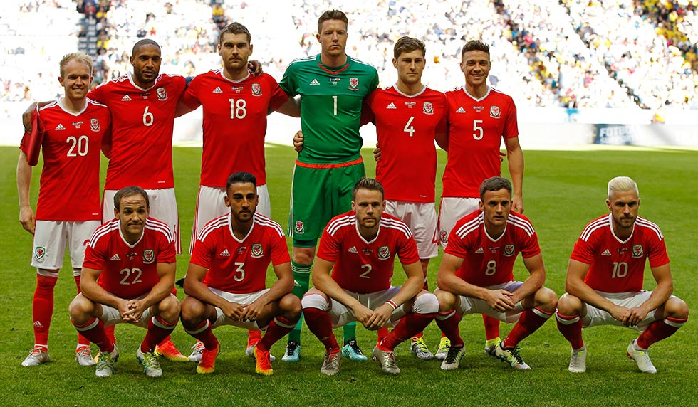

Ranking FIFA: 19° (octubre 2022).
¿Cómo se clasificó al Mundial? En el repechaje europeo, tras vencer a Austria (2-1) y derrotar 1-0 a Ucrania.
Rendimiento en 2021 (G-E-P): 4-3-1 (14 GF, 9 GC, +6).
Rendimiento en 2022: 2-2-5 (10 GF, 13 GC, -3).
Danny Ward; Rhys Norrington-Davies, Chris Mepham, Christopher Ross Gunter; Wesley James Burns, Jonathan Williams, Joseff Morrell, Dylan Christopher Levitt, Mattew Smith; Daniel James y Kieffer Moore.
Nacionalidad: galés.
Edad: 47 años.
Contratado: 3 de noviembre 2020 (nombrado interino).
Récord en el cargo (G-E-P): 10-9-9
Títulos en el cargo: -
Victoria más notable: 1-0 sobre Ucrania en la Repesca al Mundial Qatar 2022.
1930 Uruguay -
1934 Italia -
1938 Francia -
1950 Brasil -
1954 Suiza -
1958 Suecia 5°
1962 Chile -
1966 Inglaterra -
1970 México -
1974 Alemania -
1978 Argentina -
1982 España -
1986 México -
1990 Italia -
1994 Estados Unidos -
1998 Francia -
2002 Corea y Japón -
2006 Alemania -
2010 Sudáfrica -
2014 Brasil -
2018 Rusia -
